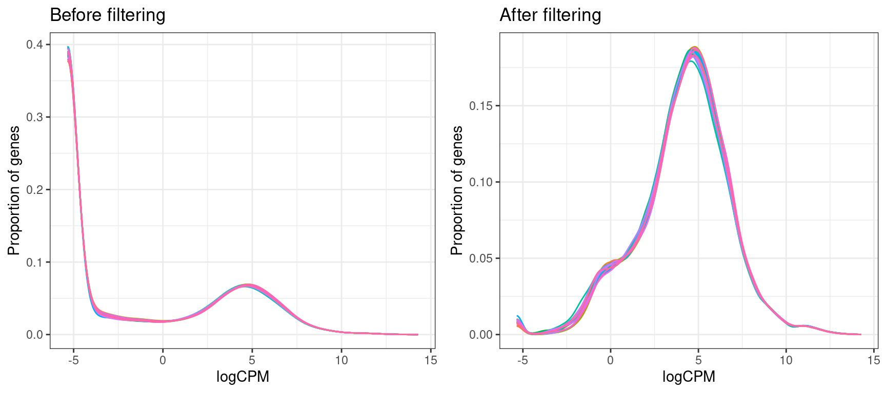
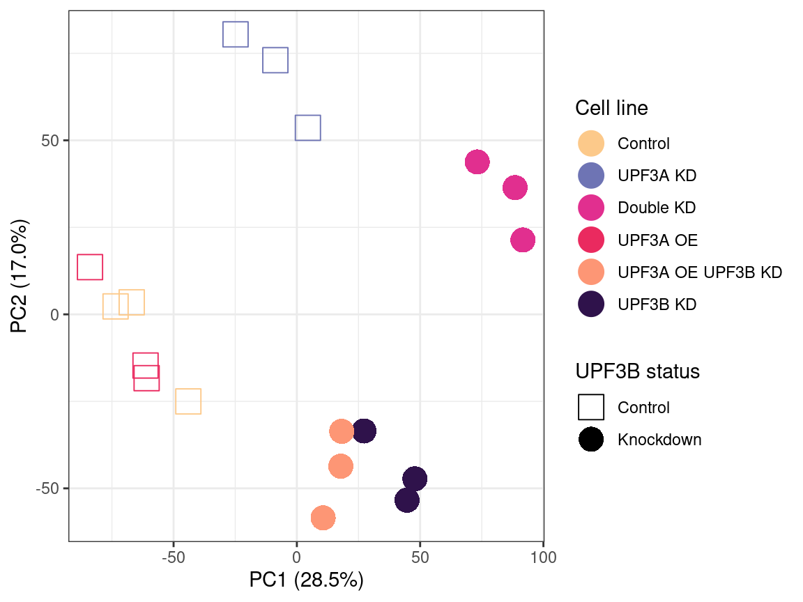
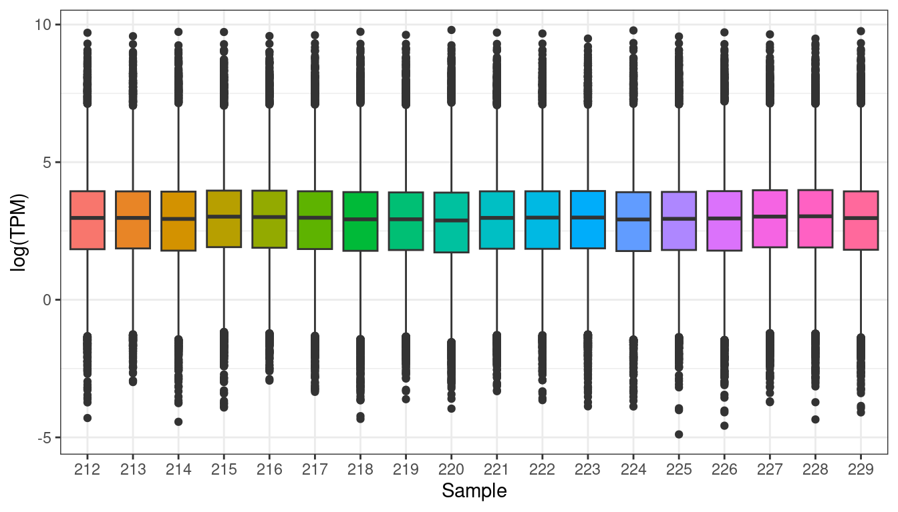

UPF3A and UPF3B Differential Gene Expression Analysis in Mouse L-cells
Urwah Nawaz
2026-07-03
Last updated: 2026-07-03
Checks: 6 1
Knit directory: NMD-analysis/
This reproducible R Markdown analysis was created with workflowr (version 1.7.2). The Checks tab describes the reproducibility checks that were applied when the results were created. The Past versions tab lists the development history.
The R Markdown file has unstaged changes. To know which version of
the R Markdown file created these results, you’ll want to first commit
it to the Git repo. If you’re still working on the analysis, you can
ignore this warning. When you’re finished, you can run
wflow_publish to commit the R Markdown file and build the
HTML.
Great job! The global environment was empty. Objects defined in the global environment can affect the analysis in your R Markdown file in unknown ways. For reproduciblity it’s best to always run the code in an empty environment.
The command set.seed(20230314) was run prior to running
the code in the R Markdown file. Setting a seed ensures that any results
that rely on randomness, e.g. subsampling or permutations, are
reproducible.
Great job! Recording the operating system, R version, and package versions is critical for reproducibility.
Nice! There were no cached chunks for this analysis, so you can be confident that you successfully produced the results during this run.
Great job! Using relative paths to the files within your workflowr project makes it easier to run your code on other machines.
Great! You are using Git for version control. Tracking code development and connecting the code version to the results is critical for reproducibility.
The results in this page were generated with repository version f0433c0. See the Past versions tab to see a history of the changes made to the R Markdown and HTML files.
Note that you need to be careful to ensure that all relevant files for
the analysis have been committed to Git prior to generating the results
(you can use wflow_publish or
wflow_git_commit). workflowr only checks the R Markdown
file, but you know if there are other scripts or data files that it
depends on. Below is the status of the Git repository when the results
were generated:
Ignored files:
Ignored: .Rhistory
Ignored: .Rproj.user/
Ignored: analysis/Enichment-analysis-fgsea.nb.html
Ignored: archive/
Ignored: code/external_code/out/
Ignored: code/external_code/tmp/
Ignored: data/fastq/
Ignored: data/fastqc/
Ignored: data/genewalk/
Ignored: output/
Ignored: tmp/
Unstaged changes:
Modified: .gitignore
Modified: Rplots.pdf
Modified: analysis/DEG-analysis.Rmd
Modified: analysis/Enichment-analysis-fgsea.Rmd
Modified: analysis/Publication-Main-figures.Rmd
Note that any generated files, e.g. HTML, png, CSS, etc., are not included in this status report because it is ok for generated content to have uncommitted changes.
These are the previous versions of the repository in which changes were
made to the R Markdown (analysis/DEG-analysis.Rmd) and HTML
(docs/DEG-analysis.html) files. If you’ve configured a
remote Git repository (see ?wflow_git_remote), click on the
hyperlinks in the table below to view the files as they were in that
past version.
| File | Version | Author | Date | Message |
|---|---|---|---|---|
| Rmd | 5719ae5 | urwahnawaz | 2026-03-07 | update |
| html | 5719ae5 | urwahnawaz | 2026-03-07 | update |
| html | 3fd5e58 | unawaz1996 | 2023-05-19 | Build site. |
| Rmd | 0c477d8 | unawaz1996 | 2023-05-19 | wflow_publish(c("analysis/index.Rmd", "analysis/DEG-analysis.Rmd")) |
| html | cf3f2e5 | unawaz1996 | 2023-05-19 | Build site. |
| Rmd | e1af73f | unawaz1996 | 2023-05-19 | wflow_publish(c("analysis/index.Rmd", "analysis/DEG-analysis.Rmd")) |
| html | c6d0d14 | unawaz1996 | 2023-05-19 | Build site. |
| Rmd | e526ece | unawaz1996 | 2023-05-19 | wflow_publish(c("analysis/index.Rmd", "analysis/DEG-analysis.Rmd")) |
| html | a23bb43 | unawaz1996 | 2023-05-19 | Build site. |
| Rmd | ac69819 | unawaz1996 | 2023-05-19 | wflow_publish(c("analysis/index.Rmd", "analysis/DEG-analysis.Rmd")) |
| html | 4e55d99 | unawaz1996 | 2023-05-12 | Build site. |
| html | bff9b8f | unawaz1996 | 2023-05-12 | Build site. |
| Rmd | 05f4d8c | unawaz1996 | 2023-05-12 | wflow_publish(c("analysis/index.Rmd", "analysis/DEG-analysis.Rmd", |
| html | f8ef81a | unawaz1996 | 2023-05-11 | Build site. |
| Rmd | 582094c | unawaz1996 | 2023-05-11 | wflow_publish(c("analysis/index.Rmd", "analysis/DEG-analysis.Rmd")) |
| html | 401069b | unawaz1996 | 2023-05-04 | Build site. |
| Rmd | 606fc38 | unawaz1996 | 2023-05-04 | wflow_publish(c("analysis/index.Rmd", "analysis/DEG-analysis.Rmd")) |
| html | a9a5164 | unawaz1996 | 2023-03-14 | Build site. |
| Rmd | 7e6ee7a | unawaz1996 | 2023-03-14 | Add main result page to navbar |
| html | 6b613fc | unawaz1996 | 2023-03-14 | Build site. |
| html | 780272b | unawaz1996 | 2023-03-14 | Build site. |
| html | 5a8cba6 | unawaz1996 | 2023-03-14 | Build site. |
| Rmd | 4856ece | unawaz1996 | 2023-03-14 | Add DEG analysis |
library(tximport)
library(edgeR)
library(limma)
library(EnsDb.Mmusculus.v79)
library(org.Mm.eg.db)
library(tidyverse)
library(magrittr)
library(scales)
library(reshape2)
library(gridExtra)
library(pheatmap)
source(here::here("code/plots.R"))
source(here::here("code/functions.R"))Overview
This notebook covers RNA-seq quality control and differential gene expression (DEG) analysis of L-cell lines with variable Upf3a and Upf3b expression (Control, Upf3a KD, Upf3a OE, Upf3b KD, Upf3 dKD, Upf3b KD + Upf3a OE). Only QC and volcano plots are retained here.
Data import and filtering
salmon.files = ("/home/neuro/Documents/NMD_analysis/Analysis/Results/Salmon")
md.files = here::here("data/LTK_Sample Metafile_V3.txt")
txdf <- transcripts(EnsDb.Mmusculus.v79, return.type = "DataFrame")
tx2gene <- as.data.frame(txdf[, c("tx_id", "gene_id")])
salmon <- list.files(salmon.files, pattern = "transcripts$", full.names = TRUE)
all_files <- file.path(salmon, "quant.sf")
names(all_files) <- paste(c(212:229))
txi_genes <- tximport(
all_files,
type = "salmon",
txOut = FALSE,
countsFromAbundance = "scaledTPM",
tx2gene = tx2gene,
ignoreTxVersion = TRUE,
ignoreAfterBar = TRUE
)
md = read.table(md.files, header= TRUE) %>% mutate(files = file.path(salmon, "quant.sf"))
md$Group = factor(md$Group)
md$Sample = as.character(md$Sample)
group_cols <- hcl.colors(n = length(unique(md$Group)), palette = "Zissou 1") %>%
setNames(unique(md$Group))Genes were removed if they were not detectable (TPM < 0.5 in more than 3 samples) or lacked annotation. This retained 10,957 genes for downstream analysis.
keep <- (rowSums(txi_genes$abundance >= 0.5) >= 3)
txi_genes_filtered <- txi_genes$counts[keep, ] %>%
as.data.frame() %>%
rownames_to_column("geneID") %>%
mutate(geneName = mapIds(org.Mm.eg.db, keys = .$geneID,
column = "SYMBOL", keytype = "ENSEMBL",
multiVals = "first")) %>%
drop_na(geneName) %>%
column_to_rownames("geneID") %>%
dplyr::select(-geneName)Quality control
Expression distributions before and after filtering
exp_den <- txi_genes$counts %>%
cpm(log = TRUE) %>%
reshape2::melt() %>%
dplyr::filter(is.finite(value)) %>%
ggplot(aes(x = value, color = as.character(Var2))) +
geom_density() +
ggtitle("Before filtering") +
labs(x = "logCPM", y = "Proportion of genes") +
theme_bw() +
theme(legend.position = "none")
exp_den_filt <- txi_genes$counts %>%
cpm(log = TRUE) %>%
magrittr::extract(keep, ) %>%
reshape2::melt() %>%
dplyr::filter(is.finite(value)) %>%
ggplot(aes(x = value, color = as.character(Var2))) +
geom_density() +
ggtitle("After filtering") +
labs(x = "logCPM", y = "Proportion of genes") +
theme_bw() +
theme(legend.position = "none")
grid.arrange(exp_den, exp_den_filt, ncol = 2)
Expression density plots before and after low-abundance gene filtering.** logCPM distributions are shown for all samples before (left) and after (right) removing genes with TPM < 0.5 in fewer than 3 samples. Filtering removes the peak of low/undetectable expression while preserving the expressed gene distribution across samples.
Principal component analysis
pca <- log2(txi_genes$abundance[keep, ] + 10^-6) %>%
t() %>%
prcomp(scale = TRUE)
pcaVars <- percent_format(0.1)(summary(pca)$importance["Proportion of Variance", ])
gene_pca <- pca$x[, 1:2] %>%
as.data.frame() %>%
cbind(md) %>%
as_tibble() %>%
ggplot(aes(PC1, PC2, shape = Condition_UPF3B, color = Group)) +
geom_point(size = 6) +
theme_bw() +
scale_shape_manual(values = c(0, 16)) +
labs(shape = "UPF3B status", colour = "Cell line") +
scale_color_manual(
values = c("#FCC98A", "#6E74B4", "#E12F8F", "#EA2A5F", "#FD9675", "#2F124B"),
labels = c(
"UPF3A_KD_UPF3B_KD" = "Double KD",
"UPF3A_KD" = "UPF3A KD",
"UPF3B_KD" = "UPF3B KD",
"UPF3A_OE" = "UPF3A OE",
"UPF3A_OE_UPF3B_KD" = "UPF3A OE UPF3B KD"
)
) +
labs(
x = paste0("PC1 (", pcaVars[["PC1"]], ")"),
y = paste0("PC2 (", pcaVars[["PC2"]], ")")
)
gene_pca
Principal component analysis of logCPM expression values across all L-cell lines.** Each point represents one sample, coloured by cell line and shaped by Upf3b knockdown status. Upf3a KD and Upf3b KD samples cluster away from Controls along PC1/PC2 but do not cluster close to one another, while Upf3a OE samples overlap with Controls, consistent with minimal impact of UPF3A overexpression on the transcriptome.
The principal component analysis was performed using the logCPM values from each sample. Each group appears to be clustering together. UPF3A over-expression is clustering with Controls, whereas the UPF3B KD samples are clustering closely with UPF3A overexpression in UPF3B KD files.
Per-sample expression and library size
txi_genes$abundance[keep, ] %>%
as.data.frame() %>%
gather(sample, value) %>%
ggplot(aes(x = sample, y = log(value), fill = sample)) +
geom_boxplot() +
ylab("log(TPM)") +
xlab("Sample") +
theme_bw() +
theme(legend.position = "none")
Distribution of gene expression (log TPM) per sample** after filtering, used to identify outlier samples prior to differential expression testing.
Differential gene expression using limma
Model description
Five pairwise comparisons (each condition vs. Control) were tested
using limma/voom.
y <- DGEList(txi_genes_filtered)
design <- model.matrix(~0+Group, data = md) %>%
set_colnames(gsub(pattern = "Group", replacement ="", x = colnames(.)))
contrasts <- makeContrasts(levels = colnames(design),
UPF3B_vs_Control = UPF3B_KD - Control,
UPF3A_vs_Control = UPF3A_KD - Control,
UPF3A_OE_vs_Control = UPF3A_OE - Control,
DoubleKD_vs_Control = UPF3A_KD_UPF3B_KD - Control,
UPF3A_OE_UPF3B_KD_vs_Control = UPF3A_OE_UPF3B_KD - Control)
y <- calcNormFactors(y)
v <- voom(y, design)
fit = lmFit(v, design) %>%
contrasts.fit(contrasts) %>%
eBayes()Relative log expression (RLE) after normalisation
v$E %>%
as.data.frame() %>%
pivot_longer(
cols = everything(), names_to = "Sample", values_to = "logCPM"
) %>%
left_join(md) %>%
group_by(Sample) %>%
mutate(RLE = logCPM - median(logCPM))%>%
ggplot(aes(Sample, RLE, fill = Group)) +
geom_boxplot(alpha = 0.9) +
geom_hline(yintercept = 0, linetype = 2) +
facet_wrap(~Group, scales = "free_x") +
scale_fill_manual(values = group_cols) +
labs(
x = "Sample", fill = "Group"
)
Relative log expression (RLE) of voom-normalised data** per sample, faceted by cell line. RLE values centred on zero indicate successful normalisation, with no evidence of systematic sample-level bias within each group.
Extract per-contrast results
res <- colnames(contrasts) %>%
lapply(function(x) {
topTable(fit, coef = x, number = Inf) %>%
mutate(contrast = as.character(x)) %>%
as.data.frame() %>%
rownames_to_column("EnsID") %>%
mutate(
gene = mapIds(org.Mm.eg.db, keys = EnsID, column = "SYMBOL",
keytype = "ENSEMBL", multiVals = "first")
)
})
names(res) <- colnames(contrasts)
results <- decideTests(fit, p.value = 0.05, adjust.method = "fdr",
method = "global", lfc = log2(1.5))
limma_results <- write_fit(fit, results = results, adjust = "fdr") %>%
rownames_to_column("ensembl_gene_id") %>%
mutate(
gene = mapIds(org.Mm.eg.db, keys = ensembl_gene_id, column = "SYMBOL",
keytype = "ENSEMBL", multiVals = "first")
) %>%
drop_na(gene)library(cowplot)
library(readr)
res <- colnames(contrasts) %>%
lapply(function(x){
# For each contrast, we need to extract out a ranked list of genes for
# fgsea, ranked by t-statistic for DE in that particular comparison.
results <- topTable(fit, coef = x, number = Inf) %>%
mutate(contrast = as.character(x)) %>%
as.data.frame() %>%
rownames_to_column("EnsID") %>%
mutate(gene = mapIds(org.Mm.eg.db, keys=EnsID, column="SYMBOL",keytype="ENSEMBL", multiVals="first"),
genename = mapIds(org.Mm.eg.db, keys=EnsID, column="GENENAME",keytype="ENSEMBL", multiVals="first"),
entrez = mapIds(org.Mm.eg.db, keys=EnsID, column="ENTREZID",keytype="ENSEMBL", multiVals="first"),
type = mapIds(org.Mm.eg.db, keys=EnsID, column="GENETYPE",keytype="ENSEMBL", multiVals="first")) })
names(res) = colnames(contrasts)
DEGenes = lapply(res, function(x)
{
x %>% dplyr::filter(adj.P.Val < 0.05 & abs(logFC) > log2(1.5))
})
names(DEGenes) = colnames(contrasts)Volcano plots
Genes were considered differentially expressed (DEGs) at FDR-adjusted p < 0.05 and |log2 fold-change| > log2(1.5).
Combined volcano plot across conditions
DEColours <- c("Downregulated" = "#53A08E", "Upregulated" = "#690020", "Not Sig" = "#CECCCA")
df <- res %>%
do.call("rbind", .) %>%
mutate(Result = ifelse(adj.P.Val < 0.05 & logFC > log2(1.5), "Upregulated",
ifelse(adj.P.Val < 0.05 & logFC < -log2(1.5), "Downregulated", "Not Sig"))) %>%
dplyr::filter(contrast != "UPF3A_OE_vs_Control") %>%
mutate(contrast = factor(contrast, levels = c(
"UPF3B_vs_Control", "UPF3A_vs_Control",
"DoubleKD_vs_Control", "UPF3A_OE_UPF3B_KD_vs_Control"
)))
contrast_labeller <- as_labeller(c(
"UPF3B_vs_Control" = "italic(Upf3b)~'KD DEGs'",
"UPF3A_vs_Control" = "italic(Upf3a)~'KD DEGs'",
"DoubleKD_vs_Control" = "italic(Upf3)~'dKD DEGs'",
"UPF3A_OE_UPF3B_KD_vs_Control" = "italic(Upf3a)~'OE'~italic(Upf3b)~'KD DEGs'"
), label_parsed)
deg_volcano_plot <- df %>%
ggplot(aes(x = logFC, y = -log10(adj.P.Val), colour = Result)) +
geom_point(alpha = 0.75, size = 3) +
scale_colour_manual(values = DEColours, breaks = c("Upregulated", "Downregulated"), drop = TRUE) +
xlab(bquote(log["2"](FC))) +
ylab(bquote(-log["10"]("adjusted P-value"))) +
geom_vline(xintercept = c(-log2(1.5), log2(1.5)), linetype = "dashed") +
ylim(0, 10) +
facet_grid(~contrast, scales = "free_x", labeller = contrast_labeller) +
theme_bw() +
theme(
legend.position = "top",
legend.title = element_blank(),
strip.text = element_text(size = 12)
)Data export
#require(openxlsx)
#save(DEGenes,res, file=here::here("output/DEG-list.Rda"))
#save(limma_results, file=here::here("output/DEG-limma-results.Rda"))
#save(results, fit,y,v,contrasts, design, contrasts, file = here::here("output/limma-matrices.Rda"))
#write.xlsx(DEGenes,file = here::here("output/DEG-results.xlsx"))
sessionInfo()R version 4.6.0 (2026-04-24)
Platform: x86_64-pc-linux-gnu
Running under: Ubuntu 22.04.5 LTS
Matrix products: default
BLAS: /usr/lib/x86_64-linux-gnu/blas/libblas.so.3.10.0
LAPACK: /usr/lib/x86_64-linux-gnu/lapack/liblapack.so.3.10.0 LAPACK version 3.10.0
locale:
[1] LC_CTYPE=en_AU.UTF-8 LC_NUMERIC=C
[3] LC_TIME=en_AU.UTF-8 LC_COLLATE=en_AU.UTF-8
[5] LC_MONETARY=en_AU.UTF-8 LC_MESSAGES=en_AU.UTF-8
[7] LC_PAPER=en_AU.UTF-8 LC_NAME=C
[9] LC_ADDRESS=C LC_TELEPHONE=C
[11] LC_MEASUREMENT=en_AU.UTF-8 LC_IDENTIFICATION=C
time zone: Australia/Adelaide
tzcode source: system (glibc)
attached base packages:
[1] tools stats4 stats graphics grDevices utils datasets
[8] methods base
other attached packages:
[1] cowplot_1.2.0 corrplot_0.95
[3] data.table_1.18.4 readxl_1.4.5
[5] pheatmap_1.0.13 gridExtra_2.3
[7] reshape2_1.4.5 scales_1.4.0
[9] magrittr_2.0.5 lubridate_1.9.5
[11] forcats_1.0.1 stringr_1.6.0
[13] dplyr_1.2.1 purrr_1.2.2
[15] readr_2.2.0 tidyr_1.3.2
[17] tibble_3.3.1 ggplot2_4.0.3
[19] tidyverse_2.0.0 org.Mm.eg.db_3.23.0
[21] EnsDb.Mmusculus.v79_2.99.0 ensembldb_2.36.0
[23] AnnotationFilter_1.36.0 GenomicFeatures_1.64.0
[25] AnnotationDbi_1.74.0 Biobase_2.72.0
[27] GenomicRanges_1.64.0 Seqinfo_1.2.0
[29] IRanges_2.46.0 S4Vectors_0.50.0
[31] BiocGenerics_0.58.0 generics_0.1.4
[33] edgeR_4.10.0 limma_3.68.2
[35] tximport_1.40.0
loaded via a namespace (and not attached):
[1] RColorBrewer_1.1-3 rstudioapi_0.18.0
[3] jsonlite_2.0.0 farver_2.1.2
[5] rmarkdown_2.31 fs_2.1.0
[7] BiocIO_1.22.0 vctrs_0.7.3
[9] memoise_2.0.1 Rsamtools_2.28.0
[11] RCurl_1.98-1.18 htmltools_0.5.9
[13] S4Arrays_1.12.0 curl_7.1.0
[15] cellranger_1.1.0 SparseArray_1.12.2
[17] sass_0.4.10 bslib_0.10.0
[19] plyr_1.8.9 cachem_1.1.0
[21] GenomicAlignments_1.48.0 whisker_0.4.1
[23] lifecycle_1.0.5 pkgconfig_2.0.3
[25] Matrix_1.7-5 R6_2.6.1
[27] fastmap_1.2.0 MatrixGenerics_1.24.0
[29] digest_0.6.39 rprojroot_2.1.1
[31] RSQLite_3.52.0 labeling_0.4.3
[33] timechange_0.4.0 httr_1.4.8
[35] abind_1.4-8 compiler_4.6.0
[37] here_1.0.2 bit64_4.8.0
[39] withr_3.0.2 S7_0.2.2
[41] BiocParallel_1.46.0 DBI_1.3.0
[43] DelayedArray_0.38.1 rjson_0.2.23
[45] otel_0.2.0 httpuv_1.6.17
[47] glue_1.8.1 restfulr_0.0.16
[49] promises_1.5.0 grid_4.6.0
[51] gtable_0.3.6 tzdb_0.5.0
[53] hms_1.1.4 XVector_0.52.0
[55] pillar_1.11.1 vroom_1.7.1
[57] later_1.4.8 lattice_0.22-9
[59] rtracklayer_1.72.0 bit_4.6.0
[61] tidyselect_1.2.1 locfit_1.5-9.12
[63] Biostrings_2.80.0 knitr_1.51
[65] git2r_0.36.2 ProtGenerics_1.44.0
[67] SummarizedExperiment_1.42.0 xfun_0.57
[69] statmod_1.5.1 matrixStats_1.5.0
[71] stringi_1.8.7 UCSC.utils_1.8.0
[73] workflowr_1.7.2 lazyeval_0.2.3
[75] yaml_2.3.12 evaluate_1.0.5
[77] codetools_0.2-20 cigarillo_1.2.0
[79] cli_3.6.6 jquerylib_0.1.4
[81] dichromat_2.0-0.1 Rcpp_1.1.1-1.1
[83] GenomeInfoDb_1.48.0 png_0.1-9
[85] XML_3.99-0.23 parallel_4.6.0
[87] blob_1.3.0 bitops_1.0-9
[89] crayon_1.5.3 rlang_1.2.0
[91] KEGGREST_1.52.0